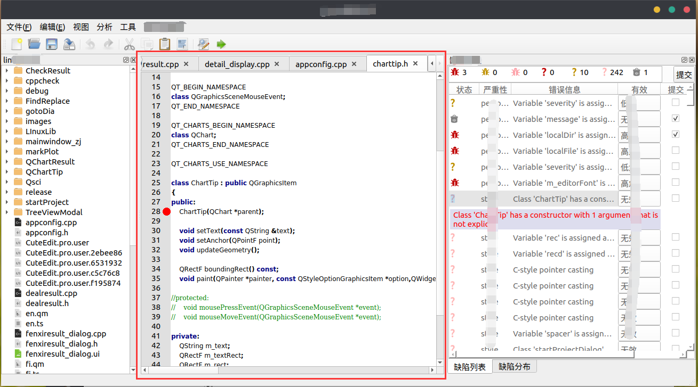
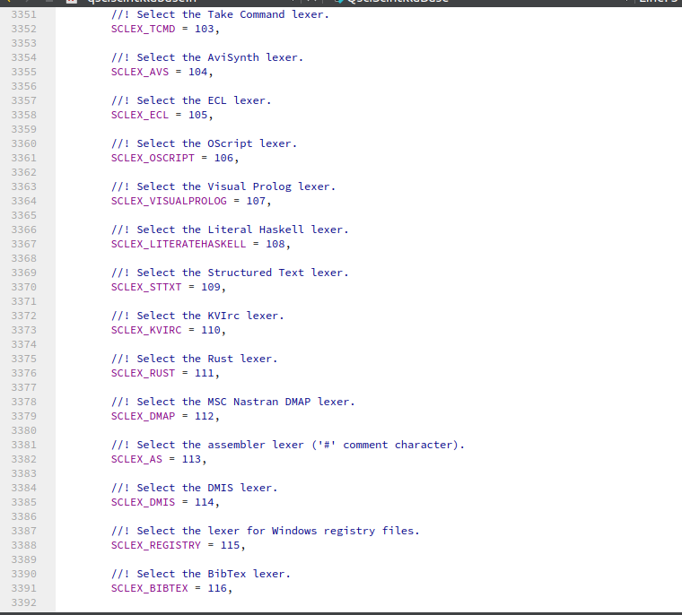
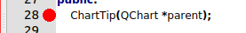
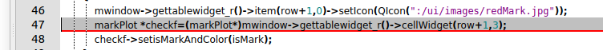

首先放一张自己做的软件中的编辑器的效果图

中间红色的框就是放在Qt的tabwidget控件中的qsciscintilla编辑器
先从官网下载qsciscintilla源码，在qtcreater中编译，提取静态库和头文件，将库和Qsci中的头文件添加到自己的项目的pro配置文件中，具体编译方法可参考网上的帖子，这里不再赘述，可以运行之后再看下面的操作
1，一些常规设置，都是通过对应的函数来设置
//设置字体
QFont font("Courier", 10, QFont::Normal); ui->textEdit->setFont(font); ui->textEdit->setMarginsFont(font); QFontMetrics fontmetrics = QFontMetrics(font);
//设置左侧行号栏宽度等 ui->textEdit->setMarginWidth(0, fontmetrics.width("00000")); ui->textEdit->setMarginLineNumbers(0, true); ui->textEdit->setBraceMatching(QsciScintilla::SloppyBraceMatch); ui->textEdit->setTabWidth(4);
//设置括号等自动补全 ui->textEdit->setAutoIndent(true);
//初始设置c++解析器 ui->textEdit->setLexer(new QsciLexerCPP(this)); //设置自动补全 ui->textEdit->setCaretLineVisible(true);
//设置光标所在行背景色 ui->textEdit->setCaretLineBackgroundColor(Qt::lightGray); // ui->textEdit->setCursorPosition(2,2); //int markerDefine(MarkerSymbol sym, int markerNumber = -1); ui->textEdit->SendScintilla(QsciScintilla::SCI_SETCODEPAGE,QsciScintilla::SC_CP_UTF8);//设置编码为UTF-8
//得到光标位置
int line,col;
ui->textEdit->getCursorPosition(&line,&col);
2，通过SendScintilla的参数来设置
最新版编辑器（QScintilla_gpl-2.11.1）好多设置都是通过QsciScintillaBase类中的SendScintilla函数来进行设置的，这个函数有多个重载：
//! Send the Scintilla message \a msg with the optional parameters \a //! wParam and \a lParam. long SendScintilla(unsigned int msg, unsigned long wParam = 0, long lParam = 0) const; //! \overload long SendScintilla(unsigned int msg, unsigned long wParam, void *lParam) const; //! \overload long SendScintilla(unsigned int msg, uintptr_t wParam, const char *lParam) const; //! \overload long SendScintilla(unsigned int msg, const char *lParam) const; //! \overload long SendScintilla(unsigned int msg, const char *wParam, const char *lParam) const; //! \overload long SendScintilla(unsigned int msg, long wParam) const; //! \overload long SendScintilla(unsigned int msg, int wParam) const; //! \overload long SendScintilla(unsigned int msg, long cpMin, long cpMax, char *lpstrText) const; //! \overload long SendScintilla(unsigned int msg, unsigned long wParam, const QColor &col) const; //! \overload long SendScintilla(unsigned int msg, const QColor &col) const; //! \overload long SendScintilla(unsigned int msg, unsigned long wParam, QPainter *hdc, const QRect &rc, long cpMin, long cpMax) const; //! \overload long SendScintilla(unsigned int msg, unsigned long wParam, const QPixmap &lParam) const; //! \overload long SendScintilla(unsigned int msg, unsigned long wParam, const QImage &lParam) const;
在这个类的前面有大量的枚举值，既是这个函数可以用到的参数，

大多数枚举值都有英文注释，可自己查找对应的参数，
这里只介绍我自己用到的几个
//SCI_MARKERGET 参数用来设置标记，默认为圆形标记
int nMask = ui->textEdit->SendScintilla(QsciScintilla::SCI_MARKERGET,linenr-1); //SCI_MARKERSETFORE，SCI_MARKERSETBACK设置标记前景和背景标记 ui->textEdit->SendScintilla(QsciScintilla::SCI_MARKERSETFORE, 0,QColor(Qt::red)); ui->textEdit->SendScintilla(QsciScintilla::SCI_MARKERSETBACK, 0,QColor(Qt::red)); ui->textEdit->SendScintilla(QsciScintilla::SCI_MARKERADD,linenr-1);
效果如图

下面设置下划线标记
ui->textEdit->SendScintilla(QsciScintilla::SCI_STYLESETUNDERLINE,linenr,true); ui->textEdit->SendScintilla(QsciScintilla::SCI_MARKERDEFINE,0,QsciScintilla::SC_MARK_UNDERLINE)
效果如下

删除所有标记
textEdit->SendScintilla(QsciScintilla::SCI_MARKERDELETEALL);
跳转标记
//跳转到下一个标记
void QsciEditor::gotoNext()//函数写完还未测试，大概是这个作用，可自行测试
{
int line,col;
ui->textEdit->getCursorPosition(&line,&col);
ui->textEdit->SendScintilla(QsciScintilla::SCI_MARKERNEXT,line);
}
//跳转到上一个标记
void QsciEditor::gotoPre()
{
int line,col;
ui->textEdit->getCursorPosition(&line,&col);
ui->textEdit->SendScintilla(QsciScintilla::SCI_MARKERPREVIOUS,line);
}
跳转光标到行line，列index
void QsciEditor::setCursorPosition_p(int line,int index)
{
ui->textEdit->setCursorPosition(line-1,index);
ui->textEdit->setCaretLineBackgroundColor(Qt::lightGray);
ui->textEdit->SendScintilla(QsciScintilla::SCI_SETFIRSTVISIBLELINE,line);
}设置词法分析器
QsciLexer *textLexer;//创建一个词法分析器
//常用以下几种，注意添加对应的头文件 textLexer = new QsciLexerCPP; textLexer = new QsciLexerPython; textLexer = new QsciLexerJava; textLexer = new QsciLexerHTML; textLexer = new QsciLexerCSharp; textLexer = new QsciLexerCSS; textLexer = new QsciLexerJavaScript;
一些编辑操作函数，看函数名就知道是干嘛的了，手动滑稽
ui->textEdit->undo();
ui->textEdit->redo();
ui->textEdit->copy();
ui->textEdit->cut();
ui->textEdit->paste();
ui->textEdit->findFirst(expr,true,false,true,true);
ui->textEdit->findNext();
ui->textEdit->replace(replaceStr);常用的信号
//编辑器内容被编辑
textChanged()
//是否可复制，大概是这样copyAvailable(bool)
就说这些，剩下的需要去源代码里面找了